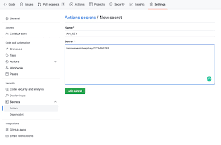

H0STBLeND
Home
New repository(Github)
Download the powerful code editor VS CODE
VS CODE


Download free webhosting software GITHUB
GITHUB


Features Update
Intellisense
Meet IntelliSense.
Go beyond syntax highlighting and autocomplete with IntelliSense, which provides smart
completions based on variable types, function definitions, and imported modules.
Debugging
Print statement debugging is a thing of the past.
Debug code right from the editor. Launch or attach to your
running apps and debug with break points, call stacks, and an interactive console.
Git
Git commands built-in.
Working with Git and other SCM providers has never
been easier. Review diffs, stage files, and make commits right from the editor. Push and pull from any hosted SCM
service.
Easily use extensions in VS Code
Extensible and customizable.
Want even more features?
Install extensions to
add new languages, themes, debuggers, and to connect to additional services. Extensions run in separate processes,
ensuring they won't slow down your editor. Learn more about extensions.
Git
Deploy with confidence and ease
With Microsoft Azure you can deploy and host your React, Angular, Vue, Node, Python (and more!) sites, store and query
relational a
nd document based data, and scale with serverless computing, all with ease, all from within VS Code
.png)